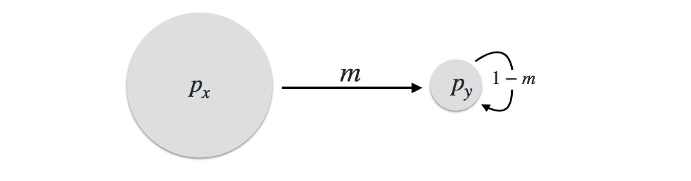
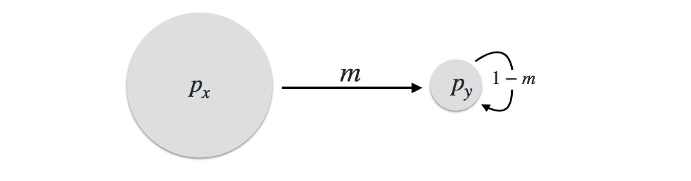
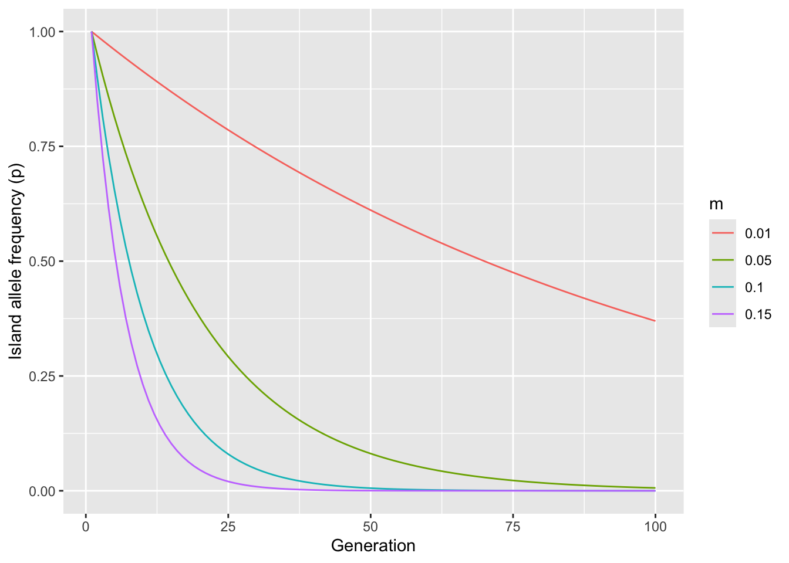
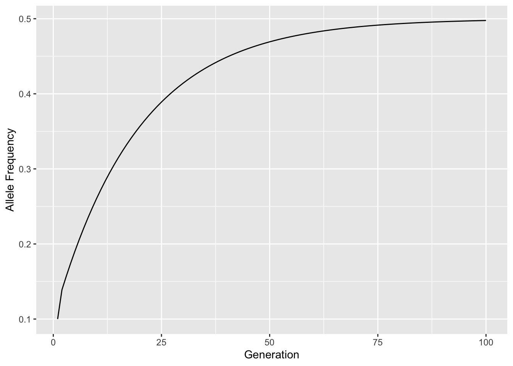
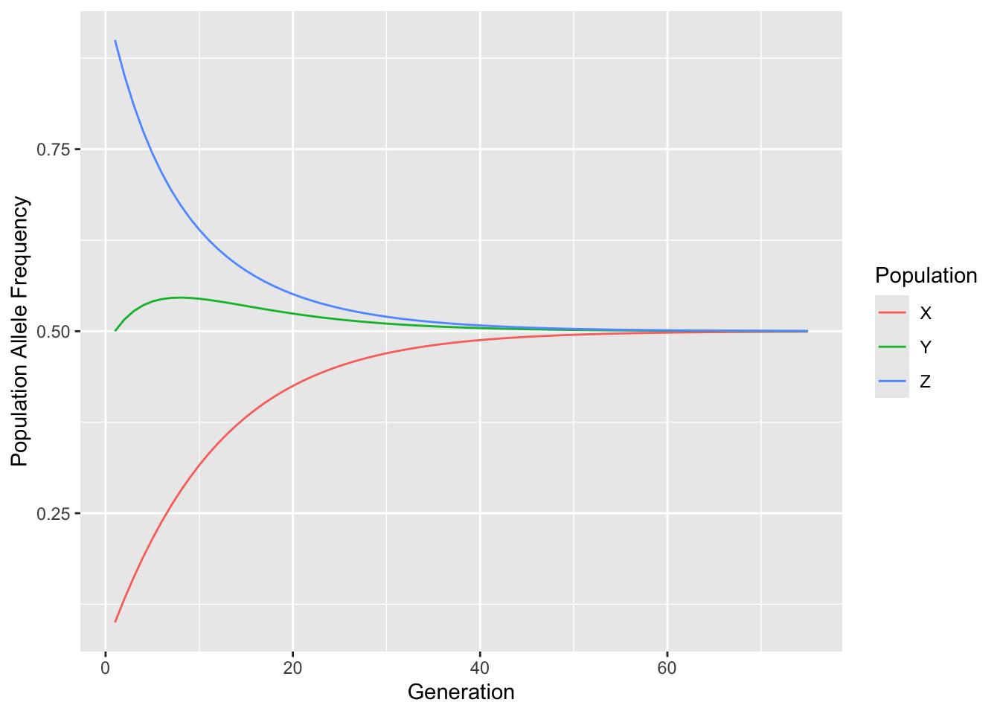

knitr::include_graphics("media/Island_Mainland.png")

Subdivision occurs when individuals are spatially, ecologically, or temporally separated causing the relative probability of mating among individuals to be non-uniformly spread across all individuals. This is the natural state for most species—they are not completely randomly mating—and as such this causes changes in how genetic variation is partitioned. In this Chapter we examine subdivision and how we quantify its strength.
Before we descend into discussions on models describing population subdivision, we should probably clarify some jargon that is used commonly in describing these systems.
Migration: Migration is the movement of individuals among spatial locations. It does not, strictly speaking, denote any relation to mating. Bird, mammals, and even insects migrate in response to annual seasonality, though the process of movement towards the equator or more reasonable habitat for the particular season does not necessarily influence population genetic structure.
Gene Flow: Gene flow is a process of genetic material moving between locales or populations that results in modification of standing genetic variation. Gene flow is commonly denoted as a rate (e.g., a fraction bound between 0 and 1) and has direct influence on the allelic and/or genotypic composition of the population.
That is not to say that migration may result in subsequent mating, contributing to the population structure, it just does not necessarily require it.
If individuals are partitioned into different groups, the expectations for allele and genotype frequencies depend upon the way in which populations are connected through gene flow. There are some classic models associated with population connectivity that we will cover in this section, though in reality the ways in which populations are actually connected most likely fall outside the strict conventions for these simple models. What these models do, however, is provide us a with a framework on which to examine observed distributions of genetic variation and to make predictions on future structure given a few assumptions.
A network analogy will be used here to describe the connectivity, with populations acting as nodes in the network and gene flow being indicated by edges connecting these nodes. Strictly speaking, this is a weighed graph as the edges have associated with them particular numerical values representing the migration rate between the connected edges. Each population can have its own allele frequency spectra and through time, allele frequencies can change in response to immigration into the population but is not expected to change due to emigration from it, as we are assuming migration likelihood of any individual is statistically independent of allele frequencies.
An island-mainland model is the simplest formulation of a population model. Here, we have a large mainland population and a small island population. For simplicity, define the allele frequencies of these two as \(p_x\) and \(p_y\). During each discrete generation, some fraction \(m\) of the individuals from the mainland arrive into the mating population of the individuals on the island. The composition of the island is composed of the \(m\) fraction of individuals that are immigrants and the \((1-m)\) fraction that were already on the island.
knitr::include_graphics("media/Island_Mainland.png")
At the next generation, the allele frequencies of the mainland population remain the same (we are assuming it is large enough such that a loss of migrants does not influence allelic or genotypic frequencies), whereas the island population is comprised of \(m\) percent of immigrants, whose frequencies are \(p_x\), and \((1-m)\) fraction of residents whose frequency was in the last generation \(p_y\). Taken together, their frequencies are:
[ p_{y,t+1} = (1-m)p_{y,t} + mp_{x,t} ]
From this formulation, it is easy to deduce that after a sufficient number of generations, the allele frequencies of both mainland and island will be the same. The island will eventually have the same frequencies as the mainland, though the amount of time it takes depends upon the difference in allele frequencies, \(\delta p = p_x - p_y\), and the migration rate, \(m\), to the island population. Since there is no migration from the island to the mainland, the equilibrium frequency will be \(p_x\). Here is a bit of code that shows the effects that different migration rates may have.
migration_rates <- c(.01,.05,.10,.15)
results <- data.frame(m=rep(migration_rates,each=100),
Generation=rep(1:100,times=4),
p=NA)
for( m in migration_rates) {
px <- 0
py <- 1
results$p[ results$m==m ] <- py
for( t in 2:100){
p.0 <- results$p[ results$m==m & results$Generation == (t-1) ]
p.1 <- (1-m)*p.0 + px*m
results$p[ results$m==m & results$Generation == t ] <- p.1
}
}
results$m <- factor(results$m)library(ggplot2)
ggplot(results, aes(x=Generation, y=p, color=m)) + geom_line() + xlab("Generation") + ylab("Island allele frequency (p)")
So for even low migration, say \(m=0.01\), allele frequencies may change rather quickly due to immigration.
The next most complex model is one where every population is exchanging migrants. This n-island model was first introduced by Sewell Wright (1931). In this one, all populations are connected via a constant migration rate. An allele that arrises in one population through mutation can potentially be dispersed to any other population in a single generation, the likelihood of which is determined by the migration rate.
knitr::include_graphics("media/Island_Model.png")
The stability of this system is quite high. All populations are sharing migrants and as a consequence, all populations will thus converge on a unified allele frequency, one defined by the global average allele frequency, \(\bar{p}\). The length of time it takes to get to that equilibrium point is determined by how far away from the global mean the population is and the rate at which migrants are distributed.
There are two ways to model this kind of system, one more simple than the other. The simplest way is to consider that the migrants are a giant migrant pool and from that they are distributed to the populations. For example, if \(\bar{p}\) is the global average allele frequency, the migrant pool could be considered to also have this allele frequency. If you believe this is a reasonable approximation, then the allele frequencies at the next generation, say for population \(X\) in Figure @ref(fig:nislandmodel), are:
[ p_{x,t+1} = (1-m)p_{x,t} + m{p} ]
In a general context, we can estimate what the allele frequencies will be for an arbitrary time in the future if we know:
- The starting allele frequencies, \(p_0\) - The migration rate, \(m_{i,j}\) - How many generations migration has been happening, \(t\).
This is estimated, following the a similar format that we found in both mutation and inbreeding, as:
[ p_t = {p} + (p_0 - {p})(1-m)^t ]
We can examine the change in allele frequencies through time numerically. Consider a population that starts out at \(p_X = 0.1\) but is receiving migrants at a rate of \(m=0.05\) each generation. With these parameters, we can set up an expectation of allele frequencies for, say, \(100\) generations, as:
T <- 100
pX <- rep(NA,T)
pX[1] <- 0.1
pbar <- 0.5
m <- 0.05
for( t in 2:T)
pX[t] <- pbar + (pX[1]-pbar)*(1-m)^t
df <- data.frame( Generation = 1:T, Frequency = pX)
Through time, the allele frequencies change systematically, tending towards the global allele frequency defined by all populations.
Some salient assumptions for this model include:
This approach may not be the most realistic one, but it does outline a general way in which we can predict allele frequencies through time.
A slightly more realistic model was introduced by Kimura & Weiss (1964) who coined the term ‘stepping-stone’ model to indicate one that takes into consideration the spatial arrangement of populations as it describes connectivity.
knitr::include_graphics("media/Stepping_Stone_Model.png")Their model consisted of an infinite length of populations, all connected with a unified migration rate, \(m\). For any population along this continuum, the frequency of alleles at the next generation was dependent upon the following:
Taken as a whole, their formulation is:
[ p_{i,t+1} = (1-m_1-m_)*p_i + (p_{i-1,t} + p_{i+1,t}) + m_{p} + _i ]
Extending on this basic model, they also derived the expectations for a 2-dimensional connectivity model where populations were arrayed on a grid with rows and columns. They also briefly entertained a 3-dimensional model as well.
For each of these models, the estimated the expectation of the decrease in genetic correlation between pairs of populations with increases in distance between populations. Perhaps not surprisingly, the correlation is higher in 1-dimensional than in 2-dimensional arrangements. It is also higher in 2-dimensional than in 3-dimensional ones. Their paper is an excellent introduction to the mathematics underlying connectivity in discrete space and should be examined in detail by those who are interested in modeling this in a more complete fashion. However, for completeness here, we will look to a more general approach to understanding connectivity and changes in allele frequencies based upon a specified ‘network’ of connectivity.
A more broad approach that can be applied to all types of connectivity models is one that allows one to specify the underlying connectivity model and then estimate allele frequency changes on that model. Instead of having a single migration rate for all populations or a rigid arrangement of populations, if you can specify the topology of a connectivity network, you can use the following approach to estimate allele frequency changes. We will start with the simple case of three populations, each with their own frequencies and connected by individual migration rates. In this system, we can consider the frequencies for population X as being derived by the frequencies of all populations with which it exchanges migrants as well as their individual rates. Here is an example from the diagram below.
[ p_{x,t+1} = m_{x y}p_{y,t} + m_{x z}p_{z,t} + [1 - (m_{x y} + m_{x z})]p_x ]
knitr::include_graphics("media/General_Model.png")
The current frequency is determined by the frequencies of all connected populations (both \(Y\) and \(Z\) in this case) at the previous generation and their individual migration rates (these are the immigrants) and the residents (\(1 - m_{all\;migration\;to\;this\;population}\)) and its previous allele frequency. In a similar fashion, the other populations are:
[ p_{y,t+1} = m_{x y}p_{x,t} + m_{y z}p_{z,t} + [1 - (m_{x y} + m_{y z})]p_y ]
and
[ p_{z,t+1} = m_{x z}p_{x,t} + m_{y z}p_{y,t} + [1 - (m_{x z} + m_{y z})]p_z ]
In R, we can iterate through this and see these behaviors. Here we look at three populations, each starting with different allele frequencies and estimate allele frequencies for a period of T = 75 generations.
These populations exchange migrants with different basal rates. For this example, we will assume the exchange of migrants is symmetric, though it is not necessary to do so, and you can see how the following code is extended to account for asymmetry.
mXY <- 0.04
mXZ <- 0.02
mYZ <- 0.08Then, the simulation is run across the T generations and at each iteration, the frequencies of each population is updated based upon these migration rates and the frequencies of the populations from which the immigrants come.
for( gen in 2:T){
pX[gen] <- mXY*pY[gen-1] + mXZ*pZ[gen-1] + ( 1 - (mXY+mXZ))*pX[gen-1]
pY[gen] <- mXY*pX[gen-1] + mYZ*pZ[gen-1] + ( 1 - (mXY+mYZ))*pY[gen-1]
pZ[gen] <- mXZ*pX[gen-1] + mYZ*pY[gen-1] + ( 1 - (mYZ+mXZ))*pZ[gen-1]
}
df <- data.frame( Generation=rep(1:T,times=3))
df$Frequency=c(pX,pY,pZ)
df$Population <- rep(c("X","Y","Z"), each=T)Through time, we see that the allele frequencies all converge on the global allele frequency
ggplot(df, aes(x=Generation, y=Frequency, color=Population)) + geom_line() + ylab("Population Allele Frequency")
There are a couple of points here to be made.
These observations suggest that when you are doing simulations, you need to wait a bit to allow the dynamics of the system to ‘burn in’ a bit. The equilibrium point we are interested in seeing is only attainable after the entire system has gone through many generations and the idiosyncrasies have been thoroughly iterated through.
In dealing with these kinds of dynamical systems, there are some important things that you need to consider when attempting to understand the underlying dynamics. These are general rules, though there are always exceptions. However, if you follow them, you will probably have a much easier time with the calculations.
With these strategies in mind, you should be able to attack any population arrangement.